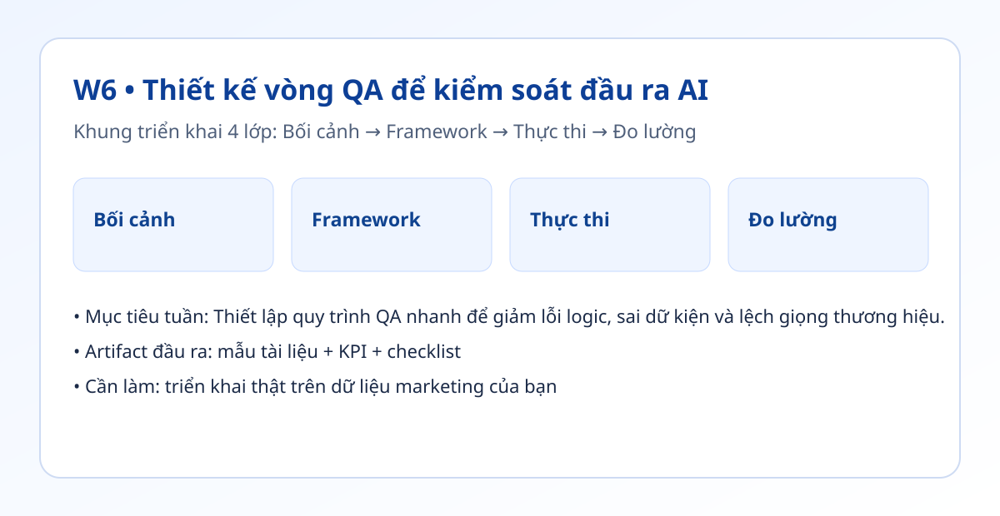

Hình trực quan mô-đun

Bối cảnh thực tế
- Khi AI tăng tốc tạo nội dung, lỗi cũng tăng theo nếu không có vòng QA chuẩn.
- QA tốt không cần dài, nhưng phải có checklist rõ và ai cũng dùng được.
- Tuần này bạn biến QA thành bước bắt buộc trước khi publish.
Khung tư duy cốt lõi
- Checklist 5 điểm: Dữ liệu, Giọng thương hiệu, CTA, Tuân thủ, Định dạng.
- Chấm Pass/Fail thay vì nhận xét mơ hồ.
- Vòng phản hồi: lỗi nào lặp lại thì sửa prompt, không sửa tay mãi.
Quy trình triển khai chi tiết
- Bước 1: Tạo checklist QA 5 điểm cho từng loại đầu ra.
- Bước 2: Quy định nhịp QA: trước khi duyệt cuối và trước khi xuất bản.
- Bước 3: Lưu lỗi theo mã lỗi ngắn để thống kê nhanh.
- Bước 4: Đặt ngưỡng can thiệp: nếu lỗi >30% thì chỉnh prompt hoặc brief.
- Bước 5: Rút gọn checklist để mỗi lần QA dưới 5 phút/đầu ra.
- Bước 6: Rà soát hàng tuần để loại bỏ lỗi lặp lại nhiều nhất.
Tình huống nhỏ với số liệu
| Chỉ số QA | Trước | Sau |
|---|---|---|
| Tỷ lệ lỗi | 60% | 20% |
| Vòng sửa trung bình | 2 vòng | 1 vòng |
| Thời gian QA | 9 phút | 5 phút |
Kết luận: Checklist ngắn + chấm Pass/Fail giúp giảm đáng kể rework và tăng tốc xuất bản.
Sản phẩm bàn giao tuần này
- Checklist QA chuẩn theo loại nội dung.
- Nhật ký lỗi theo mã lỗi.
- Bảng tổng hợp lỗi tuần để cải tiến prompt.
Bài tập thực hành (45-60 phút)
- QA 5 đầu ra gần nhất bằng checklist mới.
- Tính tỷ lệ lỗi trước/sau sau 1 tuần.
- Sửa 2 prompt gây lỗi nhiều nhất.
Thang đo hoàn thành
| Mức | Mô tả |
|---|---|
| Mức 0 | QA cảm tính, không checklist |
| Mức 1 | Có checklist nhưng không đo lỗi |
| Mức 2 | Có đo lỗi và ngưỡng can thiệp |
| Mức 3 | Lỗi giảm >= 40% sau 1-2 tuần |
Lỗi thường gặp
- Checklist quá dài khiến đội bỏ qua.
- QA xong nhưng không cập nhật prompt.
- Không lưu lỗi theo mã nên khó phân tích.
Video thực hành (tùy chọn)
Phần học chính đã đầy đủ bằng văn bản và ví dụ. Nếu bạn muốn xem thao tác thực tế, dùng các video gợi ý sau:
Đánh dấu tiến độ
Tuần này chưa hoàn thành
Đã hoàn thành tuần 6